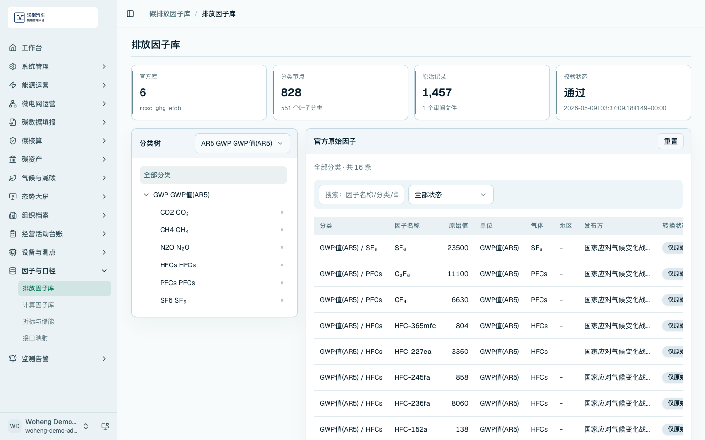
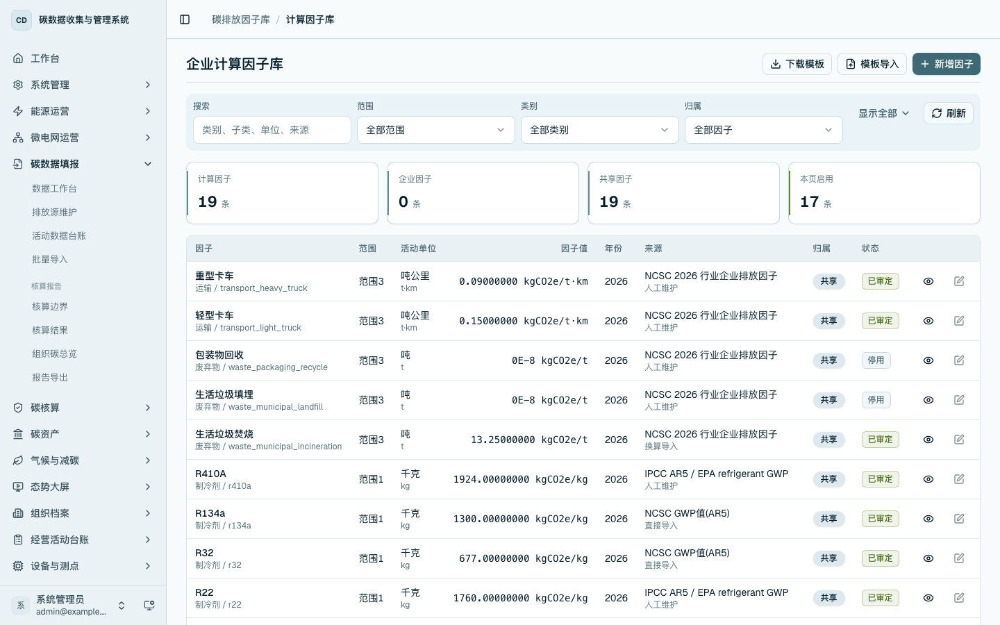
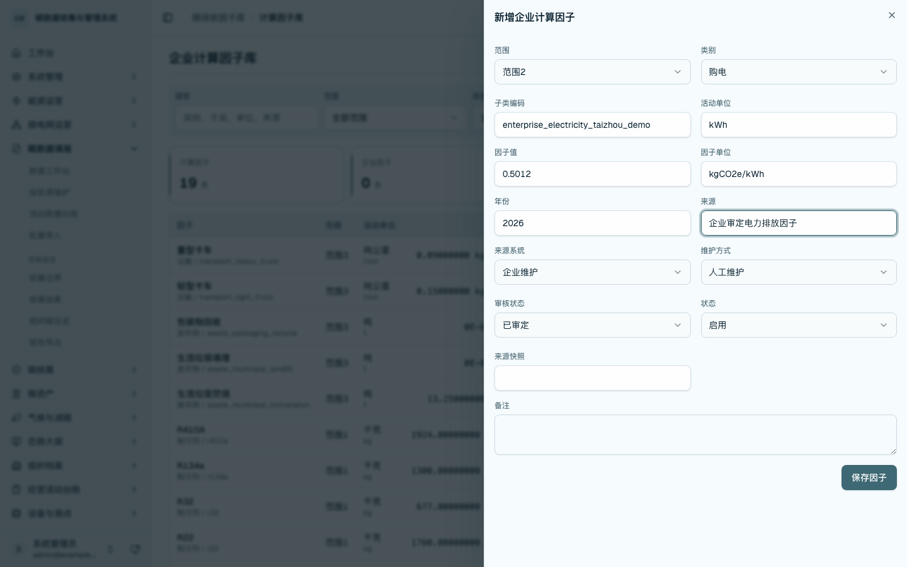
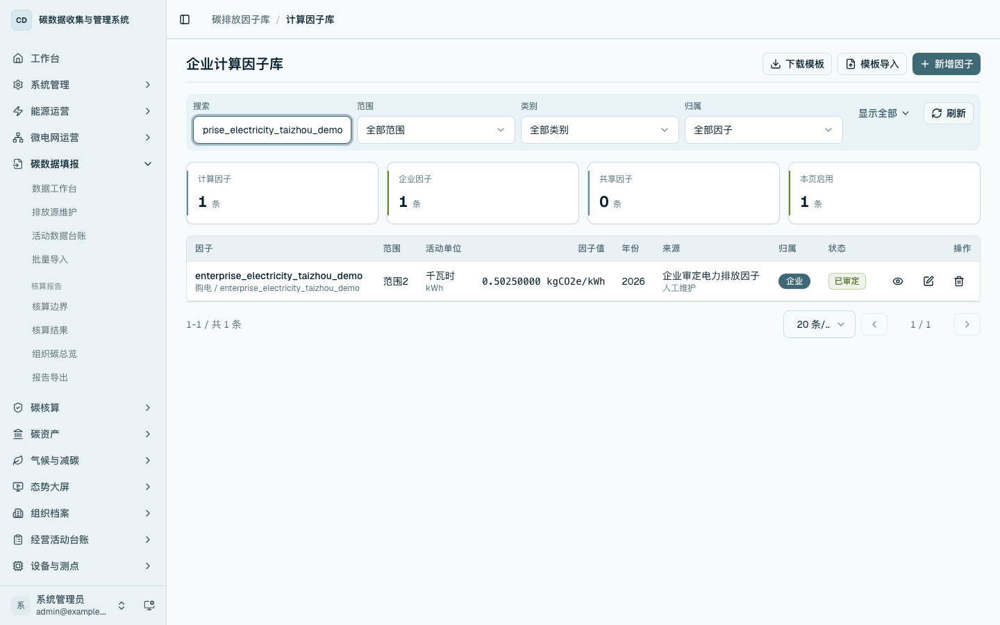
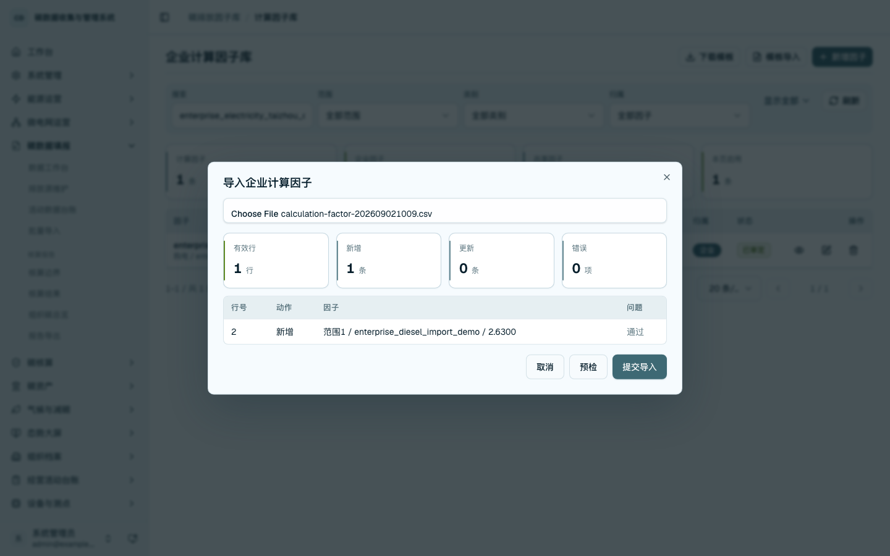
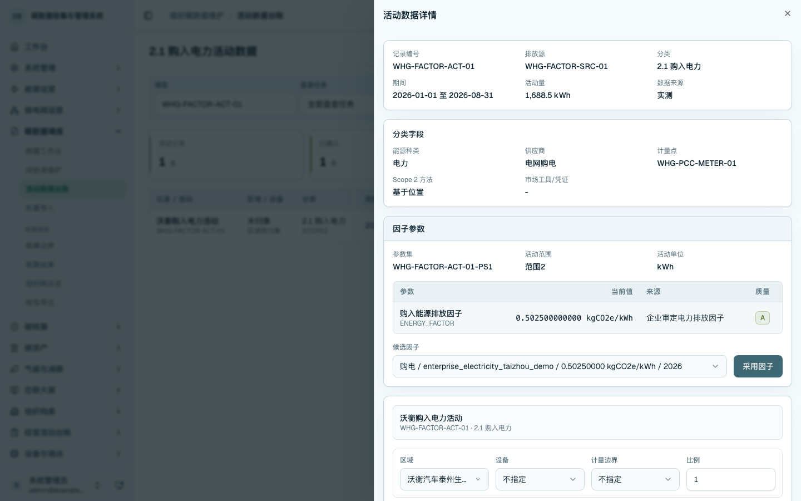

排放因子库与企业计算因子
排放因子用于把活动数据转换为温室气体排放量。平台将因子管理分为官方原始因子库和企业计算因子库：官方原始因子库用于查询、分类和来源追溯；企业计算因子库用于维护本企业采用的核算因子，并在活动数据详情中写入核算参数。
查询官方排放因子库
进入 /carbon-mgmt/factors，查看因子分类树、官方库、原始记录和校验状态。业务人员可按分类查看因子名称、适用范围、来源版本和原始字段。该页面用于来源查询和追溯，不作为企业人工编辑入口。

打开因子详情后，可查看原始因子追溯信息，包括来源、版本、字段和校验状态。

维护企业计算因子台账
进入 /carbon-mgmt/calculation-factors，查看企业计算因子库。列表按范围、类别、单位、年份、来源、归属和启用状态展示因子，企业因子可维护，共享因子只读。

新增企业计算因子
点击「新增因子」，维护范围、类别、子类编码、活动单位、因子值、因子单位、年份、来源、维护方式、审核状态和启用状态。保存后因子进入当前租户的企业计算因子库。

编辑企业计算因子
在列表中选择企业因子的编辑按钮，更新因子值、来源、状态或备注。编辑后返回台账，可核对新值和企业归属。

通过模板导入企业因子
点击「下载模板」获取 CSV 模板，按模板维护范围、类别、子类、单位、因子值、年份、来源和状态。点击「模板导入」上传文件并执行预检，页面显示有效行、新增、更新和错误统计；预检通过后提交导入。

在活动数据中选择因子
进入 /carbon-mgmt/activities，打开活动数据详情，在「因子参数」分区选择候选因子并点击「采用因子」。平台将所选因子写入当前活动的参数集，后续核算按参数集取值。

检查项
- 官方原始因子库可查询来源、版本、分类和原始字段。
- 企业计算因子可新增、编辑和模板导入。
- 共享因子在企业租户下保持只读。
- 活动数据详情可选择候选因子，并回显已采用的核算参数。